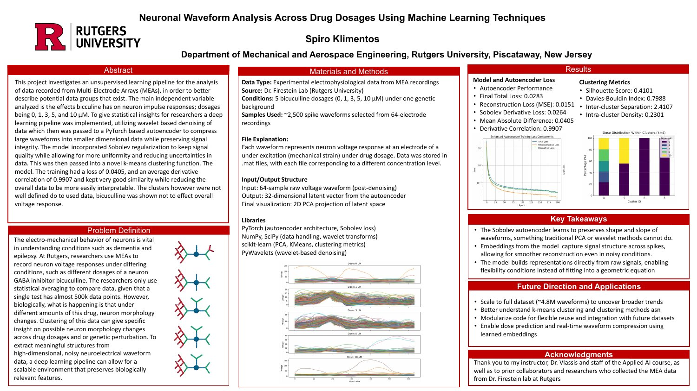
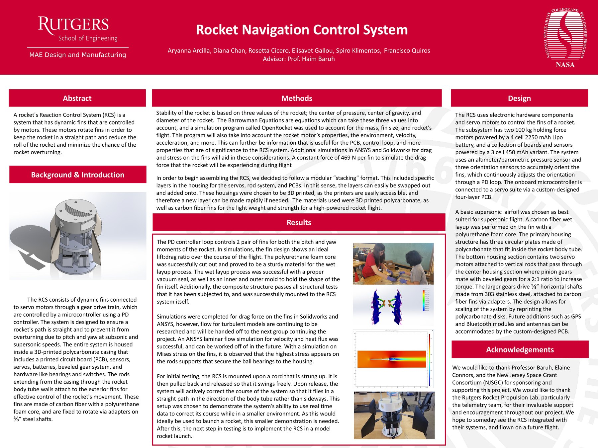
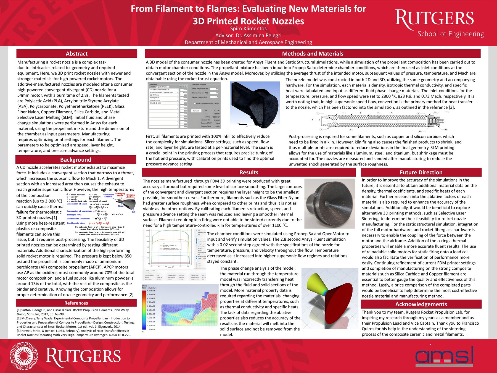

Projects
Embedded C++ Systems Experience
Problem
Engineering software for hardware-connected systems requires clean architecture, low-latency behavior, testability, and coordination across teams.
My Role
Served as product owner and technical lead, supported architectural decisions, coordinated milestones, and contributed to modular C++ solutions and automation.
Public-safe summary
Work includes modular C++, predictive algorithms, SQL test result population, Jenkins pipelines, and software/hardware integration.

Neuronal Waveform Analysis Across Drug Dosages
Problem
MEA experiments create high-dimensional, noisy electrophysiological waveform data that is difficult to interpret with averaging alone.
What I Built
A machine learning pipeline using wavelet denoising, a Sobolev-regularized autoencoder, latent-space compression, PCA visualization, and clustering metrics.
Result
The model preserved waveform shape and slope with strong derivative correlation and enabled compressed representations for future full-dataset analysis.

Rocket Navigation Control System
Problem
Design a reaction control system that uses dynamic fins to reduce pitch and yaw effects and help stabilize the rocket flight path.
System
The design used servo motors, sensors, a microcontroller, custom PCB considerations, 3D-printed housing, geared shafts, and carbon-fiber fins.
Testing Direction
The poster describes simulation, structural considerations, and a smaller-scale swing test concept for active course correction before rocket integration.

From Filament to Flames: 3D Printed Rocket Nozzles
Problem
Evaluate whether newer 3D printed materials could be feasible for high-powered rocket nozzle manufacturing under high temperature and pressure conditions.
Approach
Compared materials, manufacturing constraints, nozzle geometry, thermal considerations, and simulation inputs for convergent-divergent nozzle behavior.
Manufacturing
Utilized materails such as PLA, ABS, Silica Carbide, and more requiring different mnufacturing tolerances accounted for in the design.
HappierFull AI Meal Planning Service
Problem
Meal planning is time-consuming and difficult to personalize around budget, macros, dietary restrictions, and shopping preferences.
What I Built
A service that generated personalized weekly recipes and shopping lists using scheduled backend automation and user profile data.
Result
The project reached active users and gave me practical experience with product design, user workflows, API-driven generation, and automated delivery.